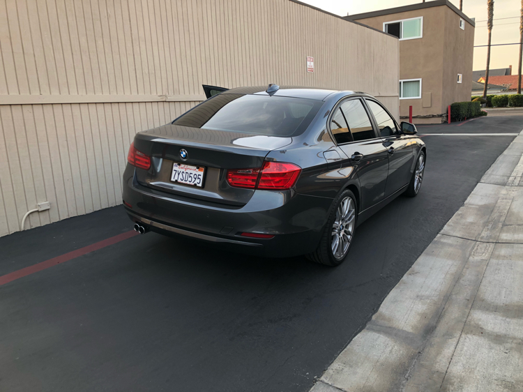
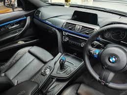
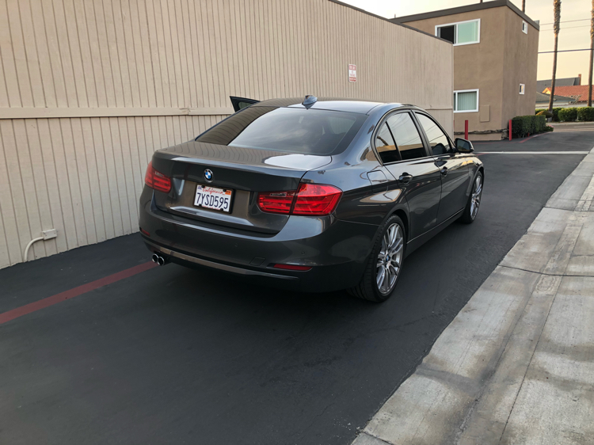
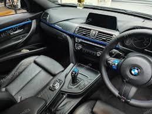

BMW F3x
The sixth-generation 3 Series (2012 - 2019)
 



Car Specifications
- Engine Options: 2.0L Inline-4, 3.0L Inline-6, 3.0L Inline-6 (M3)
- Power: 181 - 503 hp
- Torque: 320 - 600 Nm
- Transmission: 6-speed manual, 8-speed automatic, 7-speed DCT (M3)
- Top Speed: 250 km/h (155 mph)
- 0-100 km/h: 3.8 seconds (M3)
- Fuel Economy: 5.5 - 10.0 L/100 km (43 - 24 mpg)
- Production Years: 2012 - 2019
- Body Style: 2-door Coupe, 4-door Sedan, Convertible, Touring (Wagon)
- Drive Type: Rear-Wheel Drive, All-Wheel Drive (xDrive models)
- Weight: 1,400 - 1,700 kg
About the BMW F3x
The BMW F3x series marked a refinement in BMW's approach to luxury and performance. This generation brought improved technology, comfort, and driving dynamics. The F30 sedan, along with its more focused M3 variant, is regarded for its balance between everyday usability and thrilling performance.
It offered a wide range of powertrains and configurations to suit various driver preferences, making it one of the most versatile models in the 3 Series lineup.
Image Gallery


Key Features
- Performance: Powerful engine lineup, including the high-performance M3.
- Design: Refined, sporty design with modern aesthetics.
- Technology: iDrive system, advanced driver-assistance systems, and adaptive suspension.
Technical Information
The BMW F3x series offered a variety of engines and technical enhancements:
Engine Codes and Iterations
- N20: 2.0L Inline-4, turbocharged, used in 320i, 328i.
- N55: 3.0L Inline-6, turbocharged, used in 335i.
- S55: 3.0L Inline-6, twin-turbo, used in the M3, up to 503 hp.
Conclusion
The BMW F3x series continues to impress with its combination of luxury, practicality, and high-performance capabilities. From the well-rounded sedan to the exhilarating M3, it remains a standout in the 3 Series family.